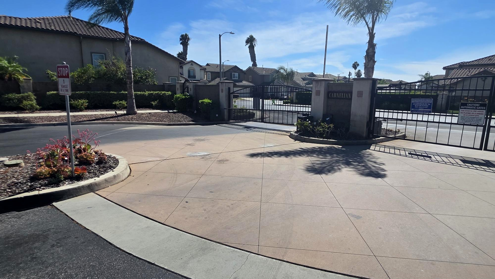

August 2026
Community Update
ARC guidance, pool and spa improvements, neighborhood safety, assessment stewardship, parking reminders and a look at what’s ahead.
Read August Newsletter →
News, improvements, events and resident information from the Carnelian community—all in one easy place.
Monthly newsletters bring the bigger story together. Between issues, this site can also highlight important projects, safety notices and community events.
ARC guidance, pool and spa improvements, neighborhood safety, assessment stewardship, parking reminders and a look at what’s ahead.
Read August Newsletter →Carnelian’s past newsletters show a consistent focus on infrastructure, appearance, safety, recreation and bringing neighbors together.
The LED streetlight conversion improved nighttime visibility for drivers and pedestrians and supports future camera improvements.
Pool and spa work has included a full drain and refill, improved maintenance practices and a new pool-service partner.
Improved trimming, refreshed mailbox landscaping, drip irrigation and water-wise initiatives continue to strengthen curb appeal.
The Board has continued reviewing security services, access controls, DKS improvements and camera infrastructure.
Actual community photography and selected polished renderings work together, while headlines and body copy stay as crisp live text.

Entrance, landscape and common-area improvements help protect the welcoming character of the community.

Maintenance, water quality and resident reminders all work together to keep the pool area enjoyable.

Projects such as the streetlight conversion show residents where long-term planning turns into tangible results.
Past communications also document community safety awareness, seasonal recreation updates and neighbor-focused events.
For management assistance, ARC questions and resident support, contact the community management team.